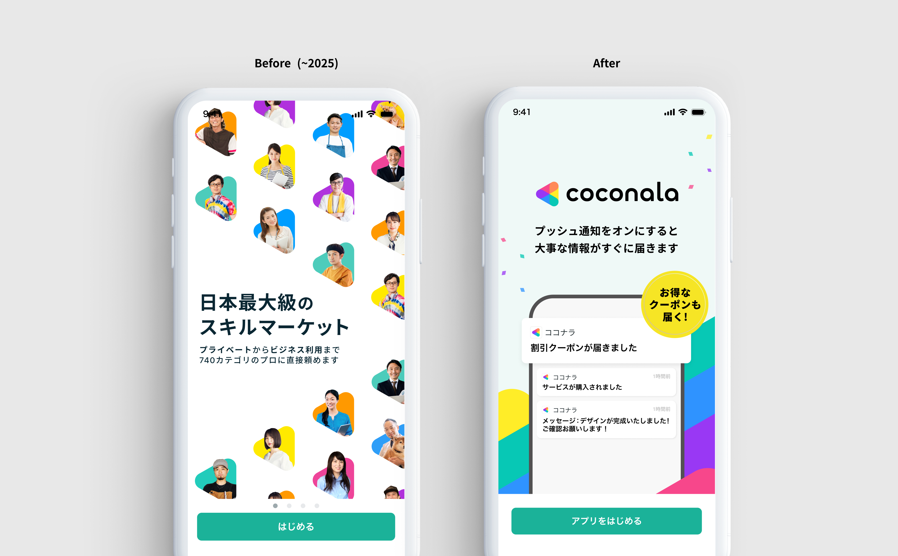
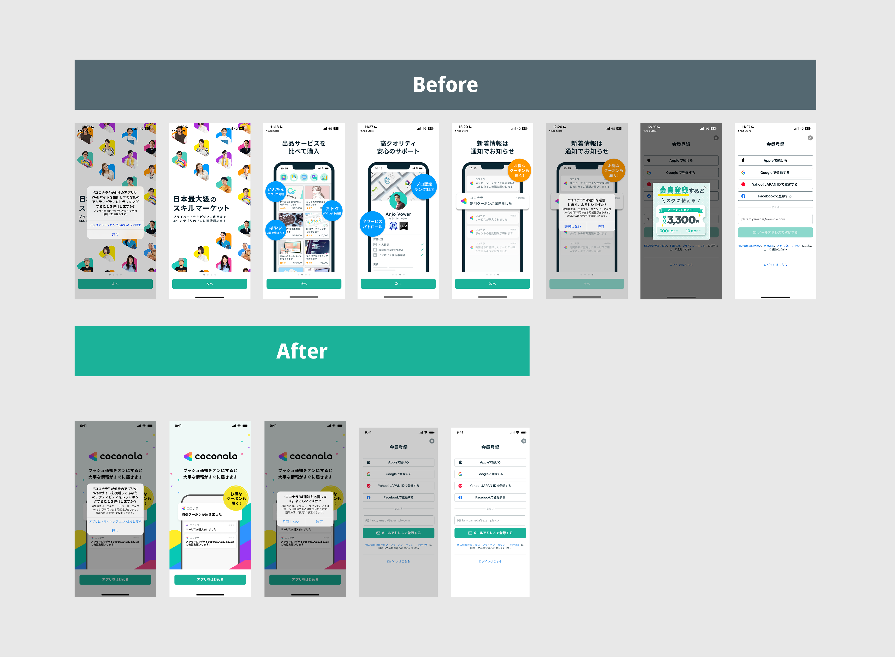

APPオンボーディング改善PJ


Overview
オンボーディングが長く離脱が発生。単純に短縮したら通知許諾率が下がった
- ココナラアプリのオンボーディングが長く、途中離脱が発生していた。まず単純にステップを短縮したが、計測すると通知許諾率が低下。短縮と通知許諾率維持のトレードオフが新たな課題として浮上した。
他社調査をもとに1画面でココナラのウェルカム感と通知の促進を叶えるUIを再設計
- 通知許諾率が下がった原因を分析し、他社のオンボーディングを調査。短縮しつつも通知の価値をユーザーに伝えるUI設計に修正し、トレードオフの解消を図った。
通知許諾率が5%向上。短縮と許諾率UPを両立
- 再設計後の計測で通知許諾率が5%向上。オンボーディングの短縮と許諾率維持を両立し、1つの改善が別指標を壊すリスクを防いだ。
Summary
Stepを短縮しドロップ率を減らす。通知の許諾率を上げるという2つの数字を上げることに成功
😟 課題
シンプルにフローを短くしたら
別の指標が下がった
- オンボーディングの長さによる途中離脱が発生していた
- 単純にステップを短くしたところ、通知許諾率が低下した
😊 貢献
原因分析・他社調査から
設計まで推進
- 通知許諾率低下の原因を分析し、通知の価値訴求が不足していたことを特定
- 他社オンボーディングを調査し、短縮しながら許諾率を維持するUIパターンを把握
- 調査結果をもとにUIを再設計し、トレードオフを解消
🌱 結果・学び
通知許諾率5%向上・
トレードオフを設計で吸収
- 通知許諾率が5%向上。Stepを短くすることと許諾率UPを両立
- 1つの改善が別指標を壊すリスクを、防ぎさらに数字を上げることができた
Process
01
短縮 → 課題発見
02
他社調査
03
再設計・計測
Research
1. 通知許諾率が下がった原因の分析
単純にオンボーディングを短くしたあとの数値を確認し、通知許諾率の低下を特定。短縮によって通知の価値をユーザーに伝えるステップが削除されていたことが原因と判断した。「何のために通知を許可するのか」が伝わらないまま通知の許諾を求める構造になっていた。
2. 他社調査を元にUIの方向性を定義
国内外の主要アプリのオンボーディングを調査。ステップ数が少なくても通知許諾率が高いサービスは、通知の具体的なメリットを訴求してから許諾を求める構成になっていることをリサーチ
Design
1. 通知の価値を伝えるUIを作成
ステップ数を短くしつつ、通知許諾の前に「どんな通知が届くか・なぜ便利か」を端的に伝えるUIを設計。削除ではなく統合の発想でUIをデザイン。